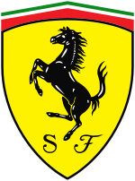

A Red Bull Racing, popularmente conhecida como Red Bull
ou pela sua abreviação RBR e atualmente competindo como
Oracle Red Bull Racing, é uma equipe de automobilismo
baseada no Reino Unido que compete no Campeonato Mundial
de Fórmula 1 sob uma licença austríaca. A equipe disputou
a categoria sob uma licença britânica entre 2005 e 2006 e
compete sob uma licença austríaca desde 2007. É uma das
duas equipes de Fórmula 1 de propriedade da empresa de
bebidas Red Bull GmbH, sendo a outra a Scuderia
AlphaTauri. A Red Bull Racing foi criada após a Red Bull
comprar a equipe Jaguar Racing no final de 2004, e é
gerenciada por Christian Horner desde sua formação
em 2005.
Equipe do top 2

A Scuderia Ferrari foi fundada por Enzo Ferrari em 1929
e tornou-se a equipe de corrida da Alfa Romeo. Em 1938,
a Alfa Romeo tomou a decisão de entrar nas corridas com
seu próprio nome, que institui a organização Alfa Corse,
que absorveu o que tinha sido a Ferrari. Enzo Ferrari
não concordou com esta mudança na política e foi, fina-
lmente, demitido pela Alfa em 1939. Os termos de sua
saída proibiu-o de participar do automobilismo em seu
próprio nome, por um período de quatro anos.
Em 1939, a Ferrari começou a trabalhar um carro de
corrida de sua autoria, o Tipo 815 (oito cilindros,
1,5 L de deslocamento). O 815S, projetado por Alberto
Massimino, foram, assim, os primeiros carros da Ferrari.
1º lugar
Max Emilian Verstappen (Hasselt, 30 de setembro de 1997)
é um automobilista neerlandês. Ele é piloto de Fórmula 1
desde 2015, tendo feito sua estreia pela equipe Toro Rosso.
Foi duas vezes campeão da Fórmula 1 em 2021 e 2022, e
terminou em terceiro lugar em 2019 e 2020 com a Red Bull
Racing, equipe pela qual corre desde 2016.
É o piloto mais jovem a liderar uma volta durante um Grande
Prêmio de Fórmula 1, o mais jovem vencedor de um Grande
Prêmio 18 anos
2º lugar
Estreante na Fórmula 1 em 2018 e efetivado como piloto da Ferrari
em 2019, Charles Leclerc começou sua trajetória até um lugar na
escuderia italiana ainda em 2016. Em março daquele ano, o
monegasco foi admitido como um dos pilotos da Ferrari Driver
Academy, ou Academia de Pilotos da Ferrari. Assim, ele passou
a ser piloto de desenvolvimento da Haas F1 Team e da Scuderia
Ferrari. A primeira participação de Charles Leclerc em um
evento da Fórmula 1 aconteceu em testes na primeira sessão
de quatro GPs de 2016. Naquele ano, ele foi campeão da GP3
Series.
3º lugar
Em 2011, durante o Grande Prêmio da Espanha, Pérez marcou
os primeiros pontos na categoria, ao chegar na nona posição.
No treino classificatório do GP De Mônaco de 2011, ele
perdeu o controle do carro após sair do túnel e depois
de tocar o guard-rail, bateu fortemente contra o muro de
proteção. O piloto mexicano chegou a perder a consciência
e foi levado para o hospital, onde foram constatados uma
fratura na perna esquerda e uma concussão. Com o acidente,
o piloto não largou em Mônaco e ficou fora também da etapa
seguinte, no Canadá, sendo substituído por Pedro de la Rosa.